Sun 1 NovDay 1
Arrive and unwind
Check in, take a first dip in the pool, then watch the sunset from Pointe aux Biches beach. Easy dinner nearby and an early night.
Make a wish, Sagarika
Blow out your candles
30 candles still burning
Blow on your phone to blow out the candles
or swipe across the flames with your finger
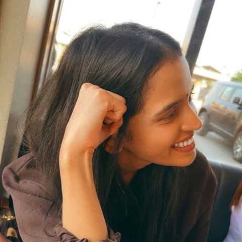
is turning 30
4 November 2026
Tap to open your birthday box
Happy 30th birthday, Sagarika Sharma. I planned a whole week of sunshine, sea and slow mornings, just for you. Keep scrolling, your adventure is waiting below.
With all my love, Mani
Our story so far
Swipe through our memories. Tap a photo to turn it over.
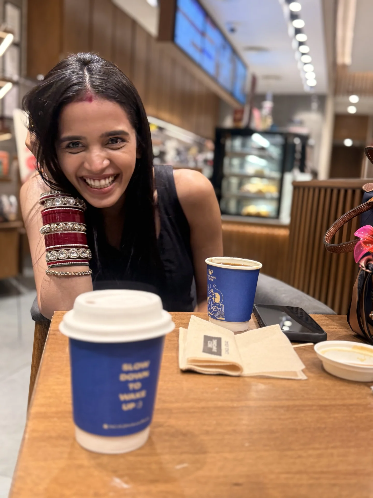
The cup says slow down to wake up. With you, I never want to rush a single moment.
ManiEverything around us was glowing, and I still couldn’t stop looking at you.
ManiPyramids have stood for thousands of years. That smile is still my favourite wonder of the world.
ManiSome secrets the Sphinx keeps. Mine is easy: it’s always been you.
Mani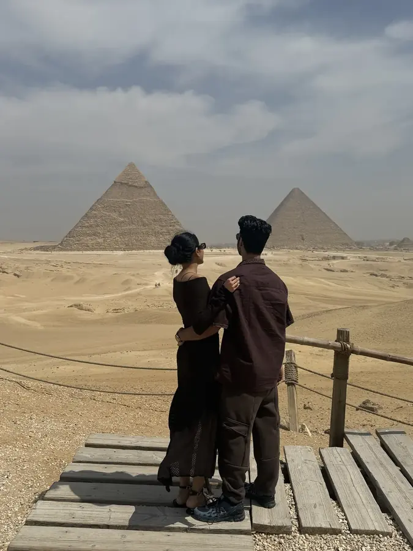
Wherever we go next, I want to see it standing right next to you.
Mani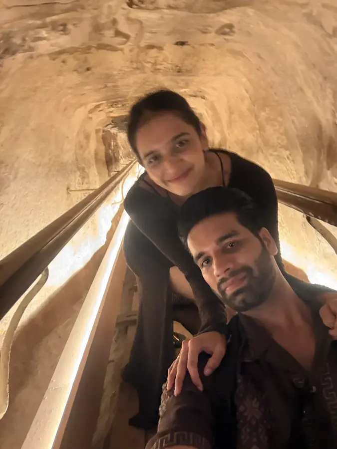
Only you could make a tunnel inside a pyramid feel cosy.
Mani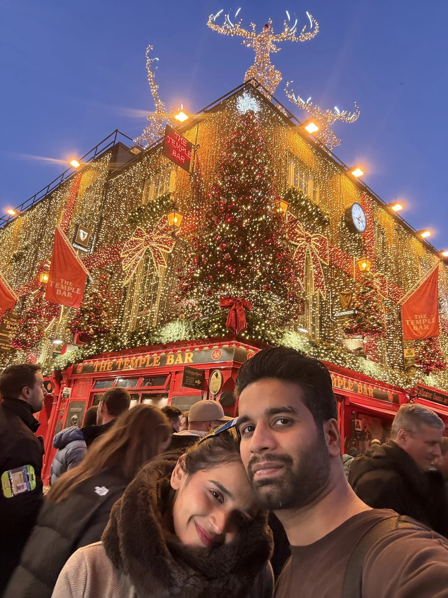
Christmas lights everywhere, and the warmest thing on that street was you.
Mani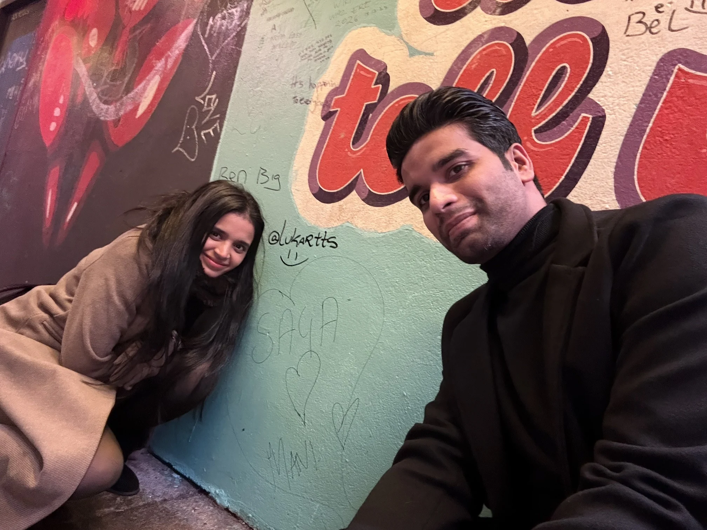
Some walls get painted over. Not this one, and not us.
Mani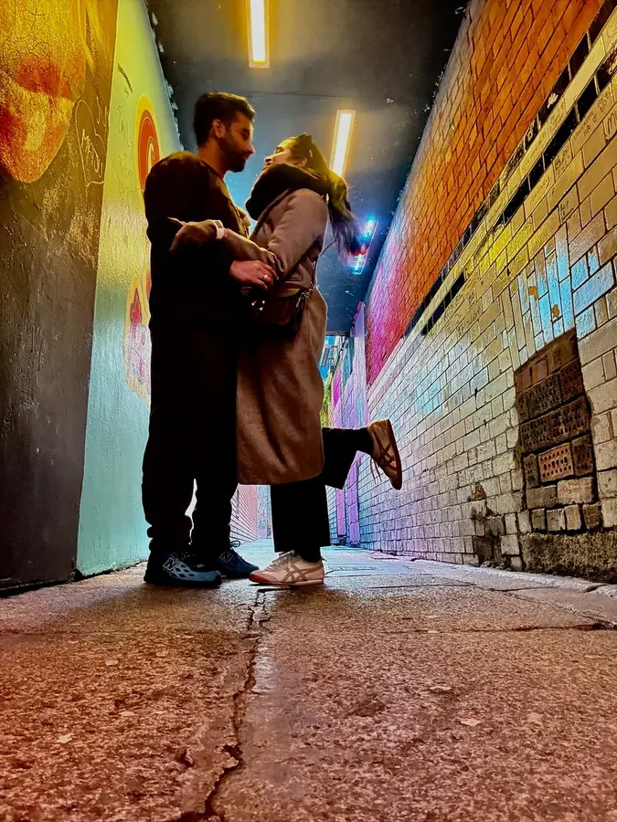
Every movie has that scene. This one is ours.
ManiEvery street feels like home when we’re this close.
ManiThe sea went on forever. So will we.
Mani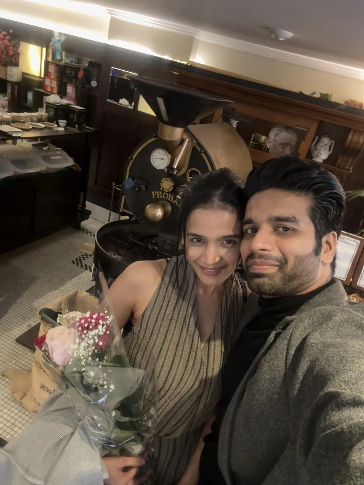
You make every café feel like a first date.
Mani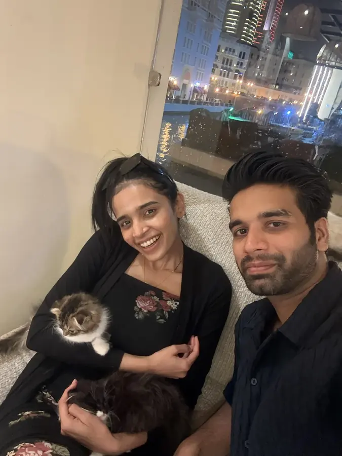
Still the cutest one in the room, and the kittens know it.
Mani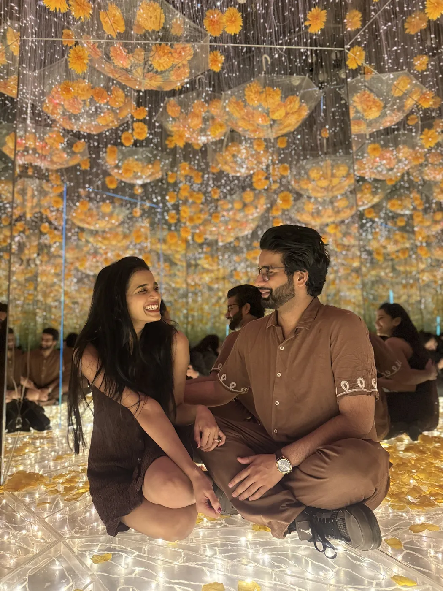
Keep laughing like that forever. I promise to keep the jokes coming.
Mani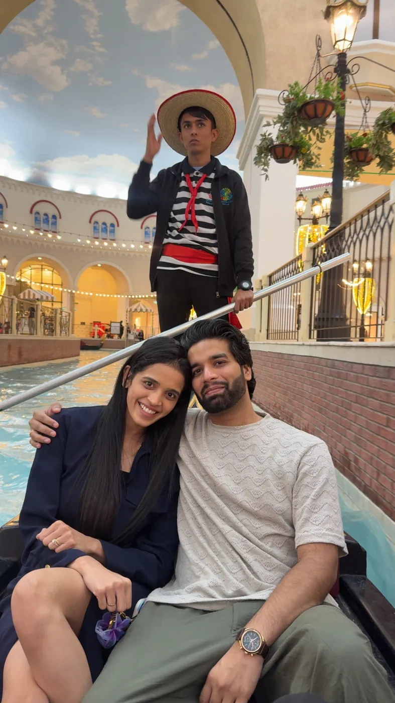
Our gondolier looked so serious. We couldn’t stop smiling.
Mani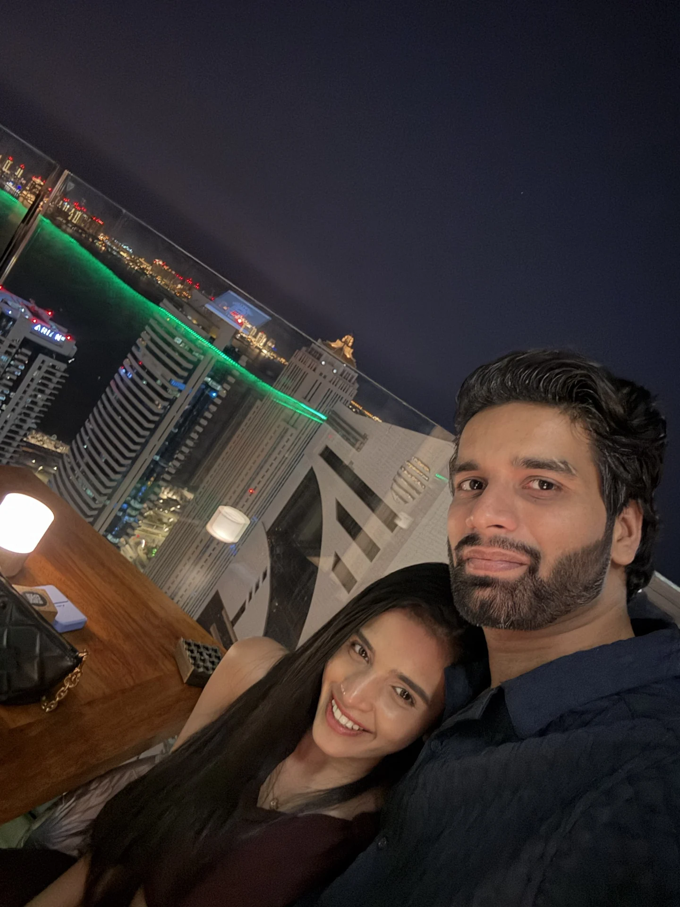
A tilted photo, and a perfectly straight answer: it’s you.
ManiHere’s to every kiss, every trip and every year still ahead. Happy 30th, my love.
ManiBarista Sagarika
One Spanish latte, espresso with sweet condensed milk, is the unofficial start of every great day. This week has a mission: find the best Spanish latte in Mauritius.
Lattes enjoyed: 0
Because every adventure needs a power-up. Crack it open!
Psssht! Fuel up, birthday girl! ⚡
Snack break
Her three true loves (after me, obviously). Tap a snack to get it from the machine and collect your coupon.
Pick a snack.
Mauritius, an island of turquoise lagoons, sugar-cane hills and the friendliest markets in the Indian Ocean. We are staying on the sunny north-west coast.
Where we’re staying
Rooplall Kangallee Road, Pointe aux Biches (Trou aux Biches), Mauritius
Check-in: Sunday 1 NovemberCheck-out: Sunday 8 November
Open in MapsPointe aux Biches and Trou aux Biches are known for calm, clear water and soft sand, and lively Grand Baie is a short drive away.
Check in, take a first dip in the pool, then watch the sunset from Pointe aux Biches beach. Easy dinner nearby and an early night.
Swim and snorkel at Trou aux Biches in the morning, a long lazy lunch, pool time after. Evening in Grand Baie for cafés, shops and sea views.
Catamaran cruise from Grand Baie to the northern islets, with snorkeling stops, views of Coin de Mire and lunch on board. Book ahead and bring sunscreen.
A Spanish latte to start, a slow beach morning, a spa treat in the afternoon, and a birthday dinner by the sea. Table booked, candles ready.
Giant water lilies at Pamplemousses Botanical Garden in the cool of the morning, then the red-roofed church at Cap Malheureux with its view of Coin de Mire.
Browse the Central Market, stroll the Caudan Waterfront and visit the UNESCO Aapravasi Ghat. Try street food like dholl puri and gateaux piments.
An early start for Grand Bassin sacred lake, Chamarel’s Seven Coloured Earth and waterfall, and a Black River Gorges viewpoint. A driver makes the long day easy.
A final swim, a farewell Spanish latte, then pack up and check out. Until next time, Mauritius.
Mani vs Sagarika. Mani is on autopilot, but even he slips up eventually. Tap your racket button when it glows to hit the shuttle back over the net. Wait until the last moment for a PERFECT smash and bonus points, but too early is a fault. Keep the rally alive until Mani misses and you win!
Rally 0 · Best 0 · Wins 0
Tap Serve to start
On a keyboard, press A or L to hit.
Here’s to thirty years of you, and to every adventure still ahead.
Aloha! 🌺
Tap Stitch 🎸